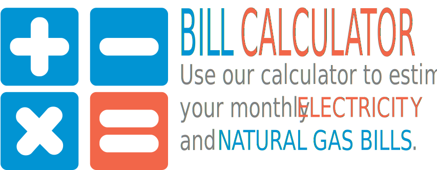

Most households and small businesses pay time-of-use electricity prices that appear on the “Electricity” line of the bill. As the regulator, the OEB sets electricity prices twice a year: May 1 and November 1. Prices are based on the estimated cost to supply electricity in the province for the next six months.
This is made up of two separate costs. Both are approved by the OEB.
Power flows from Ontario power plants and other sources, through transmission lines, to your local utility. Every home in Ontario pays the same rate to cover these costs.
A distribution company (also called “distributor” or “local utility”) delivers electricity to homes and businesses through a network of power lines within the communities it serves.
This is made up of the costs to administer the wholesale electricity system and maintain the reliability of the provincial grid. It also includes costs for funding Ministry of Energy conservation, renewable and low-income energy programs.
If you buy electricity from your utility, the electricity price already includes your share of the “Global Adjustment.” If you sign a contract with an energy retailer, you pay the agreed-upon contract price (not time-of-use or tiered prices set by the OEB). You will also need to pay your share of the Global Adjustment. It will appear as a new, separate line on your utility bill.
To help you better understand your electricity bill and how to manage costs by reducing your energy use or shifting it to less expensive times. Also, see what your bill might look like based on a contract with an energy retailer.
Try it now at OntarioEnergyBoard.ca/Consumers
000 000 000 000 0000 0
0000000
135 kWh On-peak @ X.X ¢ /kWh
127 kWh Mid-peak @ X.X ¢ /kWh
488 kWh Off-peak @ X.X ¢ /kWh
Debt Retirment Charge exemption saved you $X.XX
The Debt Retirement Charge was removed for certain residential consumption after Dec. 31, 2015. Learn more at Ontario.ca/DRC.
For information on a range of topics visit
OntarioEnergyBoard.ca/ConsumersContact CONSUMER RELATIONS (open Monday to Friday, 8:30 a.m. to 5 p.m.) 1-87 7-632-2727 (toll-free within Ontario) 41 6-3 1 4-245 5 (within Greater Toronto Area or from outside Canada)
ConsumerRelations@OntarioEnergyBoard.caHouseholds and small businesses in Ontario pay time-of-use prices for electricity that change according to the TIME OF DAY and DAY OF THE WEEK. The peak periods also change by SEASON. Your smart meter tells your utility exactly how much power you use and when you use it. With this information, your utility charges you for the amount of power you use at off-peak, mid-peak and on-peak times.
When Demand is Lowand fewer people are using power, lower-cost electricity is available from sources like nuclear and large hydroelectric systems.
When Demand Risesduring the day, the province’s supply of lower-cost electricity is used up, and more expensive sources need to be used.
Electricity use peaks during the hottest part of the afternoon, when air conditioners are running on high.
Less daylight means electricity use peaks twice: once in the morning when people wake up and turn on their lights and appliances, and again when people get home from work.
Evenings, weekends and holidays
Daytime, but not the highest-use periods of the day
The high-Demand hours during the day
Did you know about 60% of energy costs in a typical home are spent on heating and cooling? To manage electricity use, try conserving power and shifting some usage to evenings and weekends. Visit these websites for more tips: